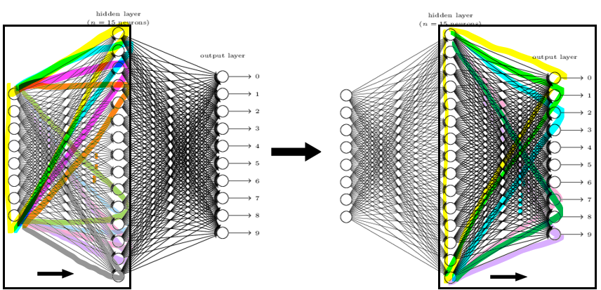
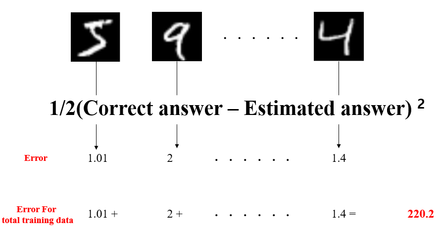

Yeji Park
Character Recognition
(using Artificial Neural Network)
0. Problem description
According to given picture which contains one written number among 0 to 9, It will recognize the number from the picture.
Ex) This picture below is the size of 28*28, has 784 pixels. Each pixel contains information of location and the brightness.
By combining these two information, computer also can recognize the number in picture. Forwawrd and back propagation are used when the model is made.
1. Forward propagation
Forward propagation

Forward propagation is inferring the value using a model created based on input values and answer.
Each node in the neral network is called perceptron.
Input perceptrons affect perceptrons in the next layer, and this perceptrons in the next layer affects perceptrons in its next layer.

Each perceptrons in the input layer are used to make perceptron in the next layer. The values of each perceptron are multiplied by weights and is summed up to make perceptrons in the next layer.
The result of summation then becomes the input of activation function such as sigmoid, ReLu.
Creating the right model for the problem is largely related to finding right weights. Input values are given, therefore by changing weights, proper model can be made.
Then, How can we find proper weights? It can be done by evaluating errors of current model, and changing its weights based on errors. This part is for back propagation.
However, We cannot find proper weights at one go. So usually, Initial weights are random number between -1 to 1.
Then, infer the value and based on the errors it can modify its weight.
How do we know how much errors we have in this model?
If we simply add the errors?
0.2+0.1+0.2+(-0.9)+(0.05)+0.25+0+0.05+0.05+0 = 0.5 +(-0.9) +0.3 = -0.01
the errors is only -0.01. It is becuase some nodes have different sign, so they cancel out each other's errors.
To avoid this, Squaring each errors and then add.
0.22+0.12+0.22+(-0.9)2+(0.05)2+0.252+02+0.052+0.052+0 2= 1.01
The evaluation function we will use here is 1/2(correct answer-estimated answer)2
(1/2)*1.01 = 0.505 error for this case
Now, we can scale up to every training case.

So how can we update the weight using evaluation function?
2. Back-propagation
Back-propagation
Back-propagation is the process of neural network finding right weights.Depending on how much each node contributes to the total error.
we will focus on 1. How much error each node contributes 2. How much weight should be updated
Back-propagation starts from the nodes from the output layer. These nodes can be evaluated by seeing how different it is from the right answer, and this differences can represented with one number by using cost function(evaluation function)

Cost(errors) for this case = 0.255
Derived from cost function : 1/2 (Correct answer - Estimated answer)
2
Add up all costs for this case.
Let's assume we have 3 datas for training the Neural network. We want to evaluate if the model we currently have is good enough or not.
so using one model(same weights for every cases) , we can evaluate the performance of our model.
The pictures below show how it works. Weight does not change, but Input is different. so a1 and a2 from layer 2 have different number for each case.
There is 784 input nodes. The value of each input node represents as number 1 or 0, which is the information of brightness of pixel.

Input nodes can be [1,0,0,0,....1,1,1].
Correct answer is [0,0,0,0,0,1,0,0,0,0]

Input nodes can be [0,1,0,1,....0,0,1].
Correct answer is [0,0,0,0,0,,0,0,0,1]

Input nodes can be [0,0,0,0,....1,1,0].
Correct answer is [0,0,0,1,0,0,0,0,0,0]
By this, total errors that this model has is 3.51 (1.01 + 0.5 + 2). We want to minimize the errors. so weights making error less than 3.51 is what we are aiming for.
This can be found by derivative.
Let's name the picture 5,9,4 as a,b,c.
We can write equation which shows more detail. The equation is attached below. In this equation, Weights are variable, Things like a.a1, a.a2 , b.a1, b.correct answer are constants (The specific number). So what we need to focus on is weights which are written w11, w12.
Now let's focus on one variable "w11". How can we change w11? Should we increase the value or decrease?
We can rearrange this equation like the picture below. The cost function consists of weight variables.
y = Cost function(w11,w12, ....w41,w42)
y = cost function(w11,w12,...w41,w42)
purpose : minimize 'y' value
There is two posibility, wheter increase the w11 value or decrease. *delta is very small number.
1.cost function(w11 + delta,w12,...w41,w42) 2.cost function(w11 - delta,w12,...w41,w42)
If the 'y' value of case 1 is less than current value, this is the way to go, or it is more than current value, then the opposite way is what we should take.We can relate this to differentiation.

Moment slope = Deritives.
In this case, We want Moment slope to be negative.